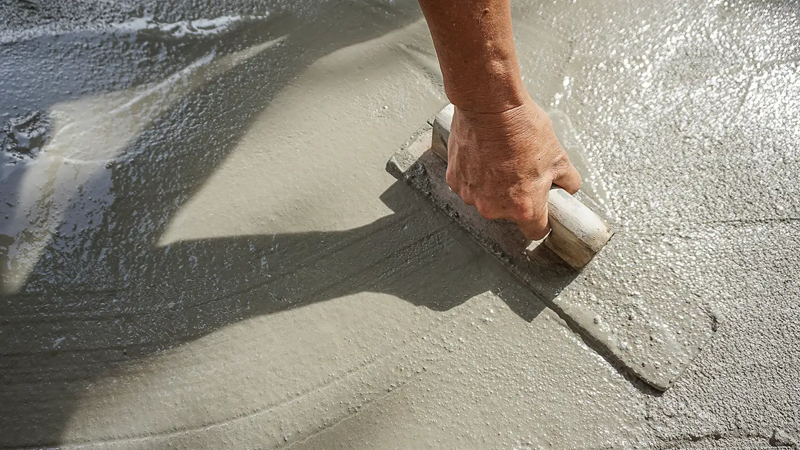
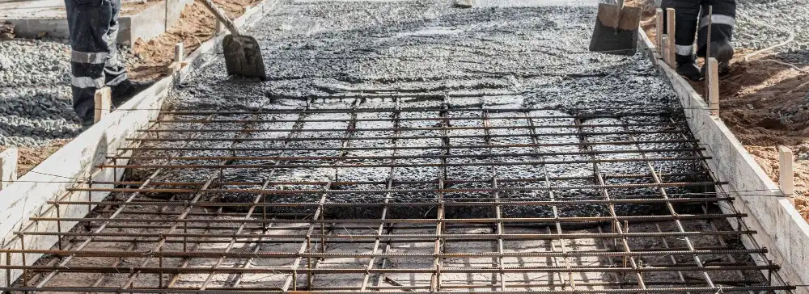
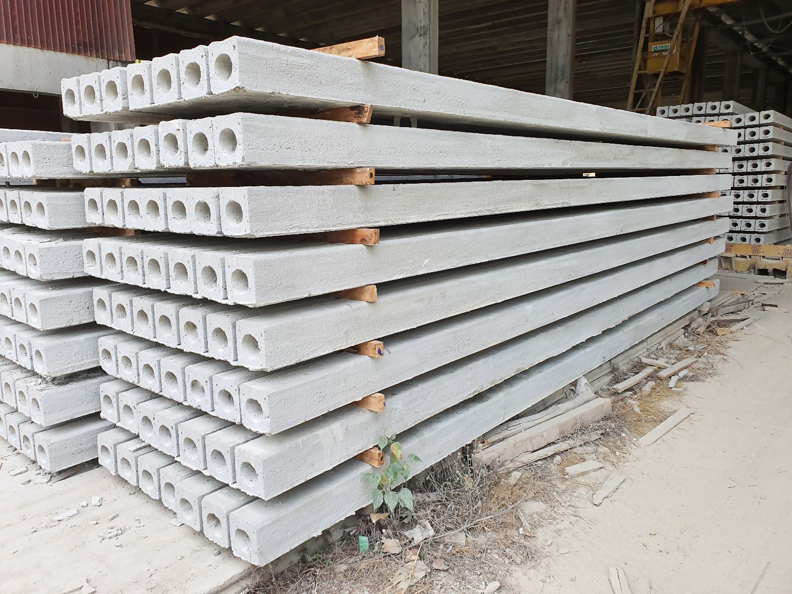

أنواع الخرسانة واستخداماتها
اكتشف تنوع الخرسانة في البناء الحديث
الخرسانة هي أكثر مواد البناء استخداماً في العالم بسبب مرونتها، متانتها، وتكلفتها المناسبة. تطورت الخرسانة لتشمل أنواعاً متخصصة تلبي احتياجات إنشائية مختلفة.
الأنواع الرئيسية للخرسانة

الخرسانة العادية
تتكون من الإسمنت، الركام (رمل + حصى)، والماء بنسب معيارية. تستخدم في معظم الإنشاءات التقليدية مثل الأساسات والأعمدة.
- قوة الضغط: 20-40 ميجا باسكال
- مميزات: اقتصادية، سهلة التشغيل
- عيوب: وزن ثقيل، موصلة حرارية عالية

الخرسانة المسلحة
خرسانة عادية مع أسياخ حديد لزيادة مقاومة الشد. تستخدم في العناصر الإنشائية المعرضة لإجهادات شد مثل الكمرات والأسقف.
- قوة الشد: تصل إلى 500 ميجا باسكال مع الحديد
- مميزات: مقاومة عالية للشد والضغط
- عيوب: حساسة للتآكل في البيئات المالحة

الخرسانة سابقة الإجهاد
يتم تطبيق إجهادات ضغط مسبقة على الخرسانة قبل تحميلها. تستخدم في الجسور الطويلة والهياكل الكبيرة.
- كفاءة: أعلى من الخرسانة المسلحة بنسبة 30-40%
- مميزات: تقليل التشققات، زيادة مدى البحور
- عيوب: تتطلب خبرة عالية في التصميم والتنفيذ
الخرسانة المضيئة
الخرسانة المضيئة (الضوئية)، هي نوع متطور قد يحتوي على مواد مضيئة مثل الفسفور أو الألياف البصرية
- المكونات: إضافات ضوئية مثل مسحوق الفسفور أو ألياف ضوئية أو LEDs مدمجة
- مميزات: توهج في الظلام أو استجابة للضوء
- عيوب: تكلفة عالية بسبب المواد المضافة
دليل اختيار نوع الخرسانة
| نوع المشروع | نوع الخرسانة الموصى بها | السبب |
|---|---|---|
| أساسات المباني | خرسانة عادية أو مسلحة | تحمل أحمال ضغط عالية |
| جسور طويلة | خرسانة سابقة الإجهاد | تقليل التشققات وزيادة المدى |
| أسقف الطوابق العليا | خرسانة خفيفة الوزن | تقليل الأحمال على الأعمدة |
| منشآت بحرية | خرسانة مقاومة للكبريتات | مقاومة التآكل في البيئات المالحة |